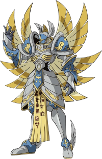

Perfil
Um Digimon Serafim vestido numa armadura sagrada que brilha de prateado e possui dez asas douradas. Como o Digimon Anjo de mais elevado estatuto, governa sobre todos eles. Embora a sua verdadeira face e pessoa estejam escondidas atrás de uma máscara e não possam ser vislumbradas, é o ser mais próximo do "Ser do Bem" chamado "Deus". Diz-se que quando descender para a batalha final contra os seres do mal, purificará tudo.
| Patamon | |
|---|---|
|  | |
| Características | |
| Nível | Final |
| Tipo | Serafim |
| Atributo | Vaccine |
| Capacidade | 26 G |
| Evoluções | Holy Angemon |